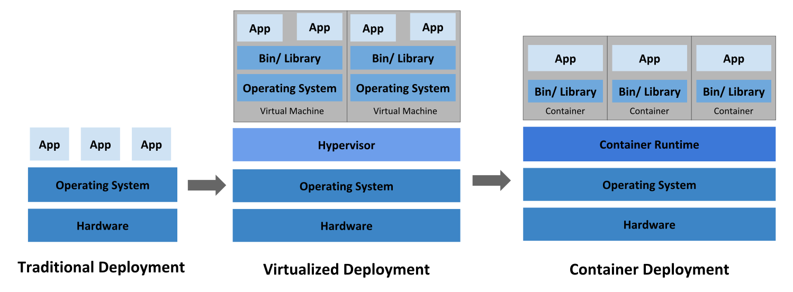

Black lives matter.
We stand in solidarity with the Black community.
Racism is unacceptable.
It conflicts with the core values of the Kubernetes project and our community does not tolerate it.
Документация
- Что такое Kubernetes Компоненты Kubernetes5 API Kubernetes
(EN)
- Документация
- Концепции
- Обзор
- Что такое Kubernetes
Edit This Page
Что такое Kubernetes
Эта страница посвящена краткому обзору Kubernetes.
Kubernetes — это портативная расширяемая платформа с открытым исходным кодом для управления контейнеризованными рабочими нагрузками и сервисами, которая облегчает как декларативную настройку, так и автоматизацию. У платформы есть большая, быстро растущая экосистема. Сервисы, поддержка и инструменты Kubernetes широко доступны.
Название Kubernetes происходит от греческого, что означает рулевой или штурман. Google открыл исходный код Kubernetes в 2014 году. Kubernetes основывается на десятилетнем опыте работе Google с масштабными рабочими нагрузками, в сочетании с лучшими в своем классе идеями и практиками сообщества.
История
Давайте вернемся назад и посмотрим, почему Kubernetes так полезен.

Традиционная эра развертывания: Ранее организации запускали приложения на физических серверах. Не было никакого способа определить границы ресурсов для приложений на физическом сервере, и это вызвало проблемы с распределением ресурсов. Например, если несколько приложений выполняются на физическом сервере, могут быть случаи, когда одно приложение будет занимать большую часть ресурсов, и в результате чего другие приложения будут работать хуже. Решением этого было запустить каждое приложение на другом физическом сервере. Но это не масштабировалось, поскольку ресурсы использовались не полностью, из-за чего организациям было накладно поддерживать множество физических серверов.
Эра виртуального развертывания: В качестве решения была представлена виртуализация. Она позволила запускать несколько виртуальных машин (ВМ) на одном физическом сервере. Виртуализация изолирует приложения между виртуальными машинами и обеспечивает определенный уровень безопасности, поскольку информация одного приложения не может быть свободно доступна другому приложению.
Виртуализация позволяет лучше использовать ресурсы на физическом сервере и обеспечивает лучшую масштабируемость, поскольку приложение можно легко добавить или обновить, кроме этого снижаются затраты на оборудование и многое другое. С помощью виртуализации можно превратить набор физических ресурсов в кластер одноразовых виртуальных машин.
Каждая виртуальная машина представляет собой полноценную машину, на которой выполняются все компоненты, включая собственную операционную систему, поверх виртуализированного оборудования.
Эра контейнеров: Контейнеры похожи на виртуальные машины, но у них есть свойства изоляции для совместного использования операционной системы (ОС) между приложениями. Поэтому контейнеры считаются легкими. Подобно виртуальной машине, контейнер имеет свою собственную файловую систему, процессор, память, пространство процесса и многое другое. Поскольку они не связаны с базовой инфраструктурой, они переносимы между облаками и дистрибутивами ОС.
Контейнеры стали популярными из-за таких дополнительных преимуществ как:
- Гибкое создание и развертывание приложений: простота и эффективность создания образа контейнера по сравнению с использованием образа виртуальной машины.
- Непрерывная разработка, интеграция и развертывание: обеспечивает надежную и частую сборку и развертывание образа контейнера с быстрым и простым откатом (благодаря неизменности образа).
- Разделение задач между Dev и Ops: создавайте образы контейнеров приложений во время сборки/релиза, а не во время развертывания, тем самым отделяя приложения от инфраструктуры.
- Наблюдаемость охватывает не только информацию и метрики на уровне ОС, но также информацию о работоспособности приложений и другие сигналы.
- Идентичная окружающая среда при разработке, тестировании и релизе: на ноутбуке работает так же, как и в облаке.
- Переносимость облачных и операционных систем: работает на Ubuntu, RHEL, CoreOS, on-prem, Google Kubernetes Engine и в любом другом месте.
- Управление, ориентированное на приложения: повышает уровень абстракции от запуска ОС на виртуальном оборудовании до запуска приложения в ОС с использованием логических ресурсов.
- Слабосвязанные, распределенные, гибкие, выделенные микросервисы: вместо монолитного стека на одной большой выделенной машине, приложения разбиты на более мелкие независимые части, которые можно динамически развертывать и управлять.
- Изоляция ресурсов: предсказуемая производительность приложения.
- Грамотное использование ресурсов: высокая эффективность и компактность.
Зачем вам Kubernetes и что он может сделать?
Контейнеры — отличный способ связать и запустить ваши приложения. В производственной среде необходимо управлять контейнерами, которые запускают приложения, и гарантировать отсутствие простоев. Например, если контейнер выходит из строя, необходимо запустить другой контейнер. Не было бы проще, если бы такое поведение обрабатывалось системой?
Вот тут Kubernetes приходит на помощь! Kubernetes дает вам фреймворк для гибкой работы распределенных систем. Он занимается масштабированием и обработкой ошибок в приложении, предоставляет шаблоны развертывания и многое другое. Например, Kubernetes может легко управлять канареечным развертыванием вашей системы.
Kubernetes предоставляет вам:
- Мониторинг сервисов и распределение нагрузки Kubernetes может обнаружить контейнер, используя имя DNS или собственный IP-адрес. Если трафик в контейнере высокий, Kubernetes может сбалансировать нагрузку и распределить сетевой трафик, чтобы развертывание было стабильным.
- Оркестрация хранилища Kubernetes позволяет вам автоматически смонтировать систему хранения по вашему выбору, такую как локальное хранилище, провайдеры общедоступного облака и многое другое.
- Автоматическое развертывание и откаты Используя Kubernetes можно описать желаемое состояние развернутых контейнеров и изменить фактическое состояние на желаемое. Например, вы можете автоматизировать Kubernetes на создание новых контейнеров для развертывания, удаления существующих контейнеров и распределения всех их ресурсов в новый контейнер.
- Автоматическое распределение нагрузки Вы предоставляете Kubernetes кластер узлов, который он может использовать для запуска контейнерных задач. Вы указываете Kubernetes, сколько ЦП и памяти (ОЗУ) требуется каждому контейнеру. Kubernetes может разместить контейнеры на ваших узлах так, чтобы наиболее эффективно использовать ресурсы.
- Самоконтроль Kubernetes перезапускает отказавшие контейнеры, заменяет и завершает работу контейнеров, которые не проходят определенную пользователем проверку работоспособности, и не показывает их клиентам, пока они не будут готовы к обслуживанию.
- Управление конфиденциальной информацией и конфигурацией Kubernetes может хранить и управлять конфиденциальной информацией, такой как пароли, OAuth-токены и ключи SSH. Вы можете развертывать и обновлять конфиденциальную информацию и конфигурацию приложения без изменений образов контейнеров и не раскрывая конфиденциальную информацию в конфигурации стека.
Чем Kubernetes не является
Kubernetes ― это не традиционная комплексная система PaaS (платформа как услуга). Поскольку Kubernetes работает на уровне контейнеров, а не на уровне оборудования, у него имеется определенные общеприменимые возможности, характерные для PaaS, такие как развертывание, масштабирование, балансировка нагрузки, ведение журналов и мониторинг. Тем не менее, Kubernetes это не монолитное решение, поэтому указанные возможности по умолчанию являются дополнительными и подключаемыми. У Kubernetes есть компоненты для создания платформы разработчика, но он сохраняет право выбора за пользователем и гибкость там, где это важно.
Kubernetes:
- Не ограничивает типы поддерживаемых приложений. Kubernetes стремится поддерживать широкий спектр рабочих нагрузок, включая те, у которых есть или отсутствует состояние, а также связанные с обработкой данных. Если приложение может работать в контейнере, оно должно отлично работать и в Kubernetes.
- Не развертывает исходный код и не собирает приложение. Рабочие процессы непрерывной интеграции, доставки и развертывания (CI/CD) определяются культурой и предпочтениями организации, а также техническими требованиями.
- Не предоставляет сервисы для приложения, такие как промежуточное программное обеспечение (например, очереди сообщений), платформы обработки данных (например, Spark), базы данных (например, MySQL), кеши или кластерные системы хранения (например, Ceph), как встроенные сервисы. Такие компоненты могут работать в Kubernetes и/или могут быть доступны для приложений, работающих в Kubernetes, через переносные механизмы, такие как Open Service Broker.
- Не включает решения для ведения журнала, мониторинга или оповещения. Он обеспечивает некоторые интеграции в качестве доказательства концепции и механизмы для сбора и экспорта метрик.
- Не указывает и не требует настройки языка/системы (например, Jsonnet). Он предоставляет декларативный API, который может быть нацелен на произвольные формы декларативных спецификаций.
- Не предоставляет и не принимает никаких комплексных систем конфигурации, технического обслуживания, управления или самовосстановления.
- Кроме того, Kubernetes — это не просто система оркестрации. Фактически, Kubernetes устраняет необходимость в этом. Техническое определение оркестрации — это выполнение определенного рабочего процесса: сначала сделай A, затем B, затем C. Напротив, Kubernetes содержит набор независимых, компонуемых процессов управления, которые непрерывно переводит текущее состояние к предполагаемому состоянию. Неважно, как добраться от А до С. Не требуется также централизованный контроль. Это делает систему более простой в использовании, более мощной, надежной, устойчивой и расширяемой.
Что дальше